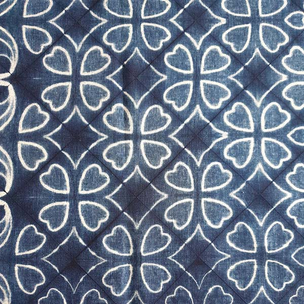
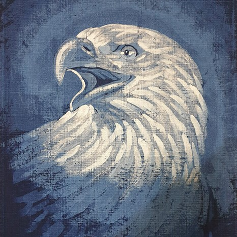
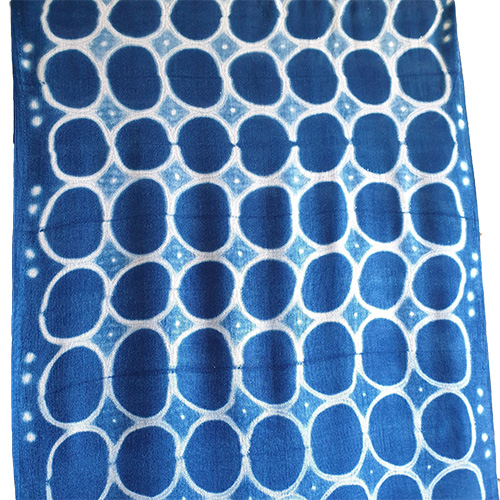
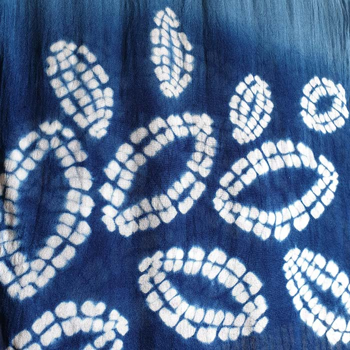
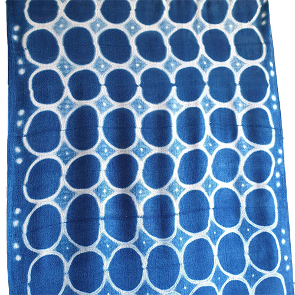
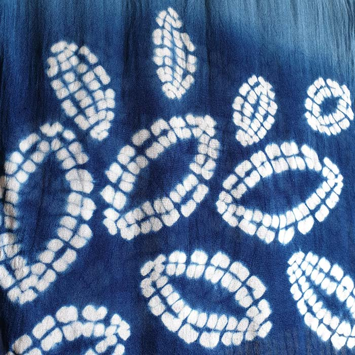
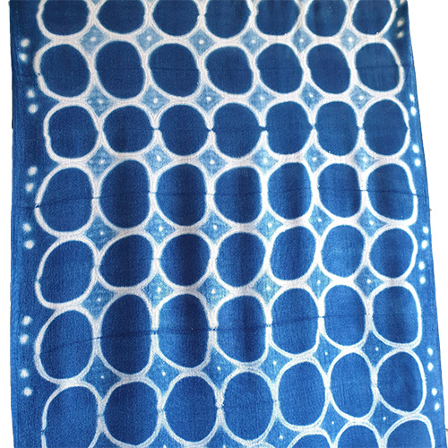
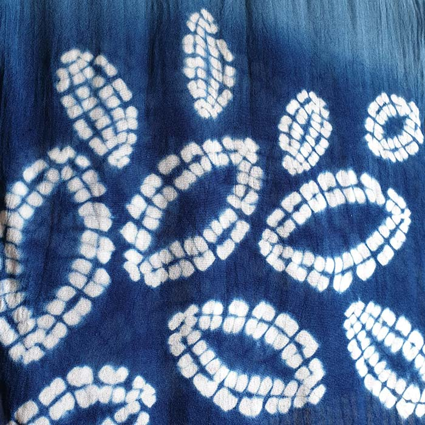

課程介紹

縫染課程
春風老師以此知名的技巧。 由專業裁縫背景出身的春風老師手把手地帶領您一針一線細心縫製圖案，當最後染完拆線時能讓您發出驚奇的讚嘆聲。
車縫染課程
春風老師以此知名的技巧。 由專業裁縫背景出身的春風老師手把手地帶領您一針一線細心縫製圖案，當最後染完拆線時能讓您發出驚奇的讚嘆聲。
作品一覽


技法介紹



 





蠟染
使用畫筆將蠟塗在布料上，吸滿蠟液的地方將不會使染液滲入，形成淺色區域。 因為如同使用畫筆繪圖，在圖像上會有很高的自由度。